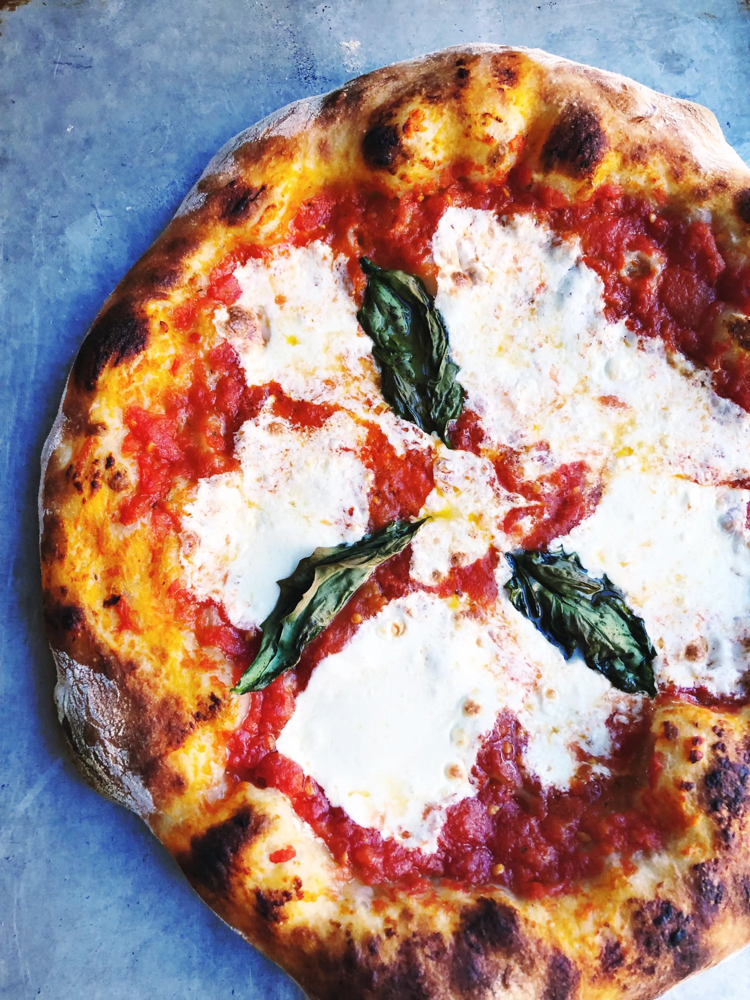

Neapolitan Pizza Recipe

Description:
This is a tutorial on how to make a simple Neapolitan-style pizza you can make at home, inspired by the best pizza in Naples Italy!
Ingredients
- 1 ball Best Homemade Pizza Dough
- 1/3 cup Easy Pizza Saucepices
- 3 ounces fresh mozzarella cheese (or about 3/4 cup shredded mozzarella)
- Kosher salt
- Pasta sauce
- 2 basil leaves
- Semolina flour or cornmeal, for dusting the pizza peel
Steps
- Prepare the dough using the Best Pizza Dough Recipe.
- Preheat pizza oven to 500 deg. F, making sure to place a pizza stone in the oven.
- Make the Homemade Pizza Sauce
- Slice the mozzarella into ¼ inch thick pieces. If it’s incredibly watery fresh mozzarella (all brands vary), you may want to let it sit on a paper towel to remove moisture for about 15 minutes then dab the mozzarella with the paper towel to remove any additional moisture.
- Stretch the dough into a circle when the oven is ready. Sprinkle a pizza peel with semolina flour or cornmeal, then carefully place the dough on top. Spread the pizza sauce across the dough. Top with mozzarella cheese. Taste a bite of the mozzarella cheese; if it does not taste salty, add a few pinches of kosher salt to the pizza.
- Add the basil leaves if you are baking in a pizza oven. For baking in a standard oven, add the basil leaves after you bake (the leaves turn black in a standard oven).
- Transfer the pizza to the pizza stone on the pizza peel, then bake until the cheese is melted, about 7 minutes in the oven (or 1 minute in the pizza oven). Slice into pieces and serve immediately.